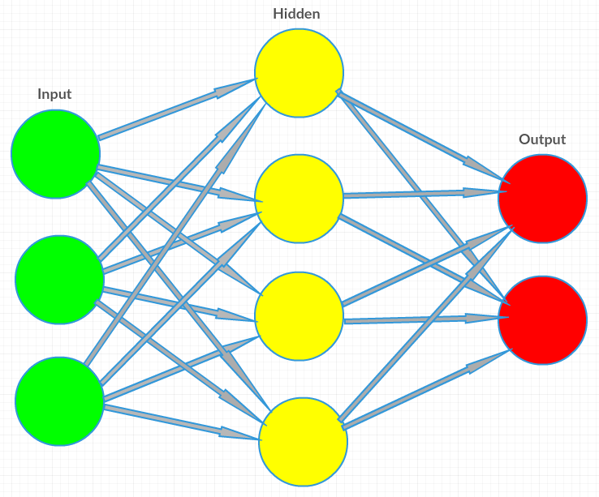

Le machine learning (apprentissage automatique) donne à un ordinateur la capacité d'apprendre sans être explicitement programmé. Il s'agit de la capacité pour un programme informatique d'analyser des données (data), d'en extraire des informations automatiquement, et d'apprendre à partir de ces informations. Donc, simplement, implémenter du machine learning signifie créer des algorithmes qui peuvent apprendre et faire des prévisions à partir d'un jeu de données.
Quelques exemples de machine learning:
Ces systèmes apprennent et s'améliorent par eux-mêmes tant que de plus en plus de données leur sont fournies: plus vous faites de recherches et d'achats sur Amazon, meilleures seront les recommendations. Plus vous marquez des emails comme étant des spams, mieux vos emails seront filtrés. Plus une voiture autonome rencontre de situations, mieux elle conduira.
Cela est très similaire à la façon dont les humains apprennent. Un exemple typique est le problème de la classification. Par exemple, le filtre anti-spam pour boîtes emails a besoin de classifier les mails entre spams et non-spams. Notez que c'est assez dépendant de l'utilisateur: Si un utilisateur marque tous les emails d'agences de voyages comme étant du spam, nous allons classifier les nouveaux emails de façon plus efficace selon ces critères. Des données plus pertinentes mènent à de meilleures prédictions.
Pour faire simple, le but d'un apprenant - humain ou machine - est de généraliser à partir de ses expériences... Oui, il s'agit là d'essentialisme, mais il s'agit d'un problème humain.
les algorithmes de machine learning peuvent être divisés en trois grandes catégories:
L'apprentissage supervisé: On présente au programme des exemples d'entrées (input) et de sorties désirées (output), et le but est d'apprendre des règles générales qui lient les entrées aux sorties. Un filtre anti-spam en est un exemple.
L'apprentissage non-supervisé: aucune "étiquette" n'est donnée à l'algorithme d'apprentissage, le laissant découvrir par lui-même des patterns dans les données qu'on lui a fournies en entrée. Par exemple, imaginez que vous ayez des données sur toutes les voitures et leurs acheteurs. Le système peut trouver des patterns et identifier que (ce n'est qu'un exemple au hasard) les acheteurs qui habitent en périphérie préfèrent les crossover/SUV à essence, mais les acheteurs qui habitent en centre ville préfèrent les petites voitures électriques. Le système ayant réussi à déduire ça va pouvoir prédire qui sera plus succeptible d'acheter telle ou telle voiture.
L'apprentissage par renforcement: un programme informatique intéragit avec un environnement dynamique, dans lequel il doit accomplir une certaine tâche (comme conduire un véhicule, ou jouer à un jeu contre des adversaires). On fournit un retour au programme sous la forme de "récompenses" et de "punitions" (désolé, Marshall Rosenberg) à mesure qu'il explore des moyens de résoudre le problème qui lui est donné.
Une autre classification des algorithmes de machine learning est possible si on considère plutôt les sorties désirées.
La classification (typiquement dans l'apprentissage supervisé): les entrées sont divisées en plusieurs classes. Le filtre anti-spam (encore lui) est un exemple de cette classification, où les entrées sont les emails et les classes sont "spam" et "non-spam"
La Régression, qui est aussi un problème généralement traité sous l'angle de l'apprentissage supervisé, dans lequel nous allons chercher à prédire des valeurs continues. Par exemple, prédire le prix des maisons ou celui des actions en bourse.
Le regroupement (clustering): un ensemble d'entrées va être divisé en différents groupes. Ça ressemble à la classification, dit comme ça, mais contrairement à la classification, les groupes ne sont pas connus à l'avance, ce qui en fait typiquement une tâche non-supervisée. Par exemple, on va s'en servir pour segmenter les consommateurs.
L'estimation de la densité trouve la distribution des entrées dans un espace. Par exemple, en ayant les résultats des test de diabète d'un nombre spécifique de personnes, nous pouvons estimer la répartition des diabétiques dans la population entière
La réduction dimensionnelle simplifie les entrées en les reliant dans un espace à plus faible dimension. La modélisation de sujets ("topic modeling", ou encore "modélisation thématique") est un problème connexe où on donne à un programme une liste de documents en langage humain, et on lui demande de trouver quels documents couvrent des sujets/thématiques similaires.
Comprendre le type de problèmes que vous cherchez à résoudre est important pour choisir le bon algorithme à utiliser.
Le but des réseaux de neurones artificiels utilisés dans le machine learning, est d'imiter la façon dont le cerveau humain organise et comprend les informations, dans le but d'arriver à différentes prédictions.
Les réseaux neuronaux, avec leur remarquable capacité à donner du sens à des données compliquées ou imprécises, peuvent être utilisés pour extraire des patterns et détecter des tendances qui sont trop complexes pour être remarqués par des humains ou d'autres méthodes informatisées.
Les réseaux de neurones artificiels, comme les vrais cerveaux, sont formés de "neurones" interconenctés. Chacun de ces neurones est capable d'effectuer une tâche liée aux données, comme reconnaître quelque chose, faire correspondre un bout d'information à un autre, et répondre à une question à propos de la relation entre ceux-ci. Chaque neurone est capable de transmettre le résultat de son travail à un neurone voisin, qui peut à son tour le traiter davantage.
Typiquement, les neurones sont organisés en couches (layers). Différentes couches peuvent effectuer différents types de transformations sur leurs entrées. Le signal voyage de la première couche (la couche d'entrée, input layer) à la couche de sortie (output layer), et ayant généralement traversé de multiples couches intermédiaires.
voici à quoi ressemble un réseau de neurones simple:

Le réseau est capable de changer et de s'adapter sur la base des données qui passent à travers, les connexions entre ces neurones sont affinées jusqu'à ce que le réseau soit capable de donner des prédictions très précises. On peut parler d'apprentissage, car il procède de la même manière que notre cerveau.
Les réseaux neuronaux ont été utilisés pour accomplir une grande variété de tâches, incluant la vision par ordinateur (computer vision), la reconnaissance vocale (speech recognition), la traduction automatique (machine translation), jouer à des jeux vidéos et des jeux de plateau, effectuer des diagnostics médicaux, et bien d'auters choses...
Construisons un programme qui va apprendre à l'ordinateur à reconnaître de simples patterns (modèles) en utilisant les réseaux neuronaux!
Les réseaux neuronaux, comme les vrais cerveaux, sont formés de neurones interconnectés, qui sont capables d'effectuer une tâche à partir des données qu'on leur fournit. Des tâches comme répondre à une question sur la relation entre ces données.
prenons le pattern suivant:
1 1 1 = 1
1 0 1 = 1
0 1 1 = 0
Chaque entrée, et la sortie, peut être seulement un 0 ou un 1. Si on y regarde de plus près, nous pouvons remarquer que la sortie est 1 si la première entrée est 1. Toutefois, nous n'allons pas le dire à l'ordinateur: nous allons seulement lui fournir des exemples d'entrées et de sorties, et lui demander de deviner la sortie si on lui fournit en entrée: 1 0 0 (cette sortie devrait être 1).
Pour rester simple, nous allons modéliser un simple neurone, avec trois entrées et une sortie. Les trois exemples ci-dessus sont appelés training set.
Nous allons entraîner le neurone à reconnaître le pattern, puis résoudre le problème consistant à trouver la sortie correspondant à l'entrée 1 0 0 , en ayant juste le training set, et sans savoir quelle opération il effectue.
Nous allons donner à chaque entrée un poids, qui peut être un nombre positif ou négatif. Une entrée avec un poids positif grand, ou un grand poids négatif aura un effet plus important sur la sortie du neurone. Avant que nous ne commencions, nous allons assigner un nombre aléatoire à chaque poids. Ensuite, nous allons commencer le processus d'entraînement:
Pour la formule, nous allons prendre la somme pondérée des entrées et les normaliser entre 0 et 1:
$${Sortie \space du \space neurone} = {1 \over {1 + e^ {-(\sum{weight_i input_i})}}}$$
Après chaque itération, nous devons ajuster le poids selon l'erreur (la différence entre la sortie calculée et la vraie sortie). Nous allons utiliser cette formule:
ajustement = erreur*entree*sortie*(1-sortie)
Cela va rendre l'ajustement proportionnel à la taille de l'erreur. Après chaque ajustement, la taille de l'erreur devrait être de plus en plus petite.
Après la 10 000ème itération, nous aurons des poids optimisés, et nous pourrons ensuite donner les sorties que nous désirons au programme. Le programme va utiliser les poids et calculer la sortie en utilisant la même formule des sommes pondérées que précédemment.
La technique décrite ici est un exemple très simple. Toutefois, une reconnaissance complexe de pattern ou d'images utilise une approche similaire.
Ah... maintenant vous voulez voir du code, j'imagine? Et bien le voici (en Python), mais quelques explications s'imposent avant.
Ce code est créé from scratch, sans utiliser de librairie spéciale. Le seul module Python que nous allons utiliser, histoire de gagner quand même un peu de temps, est numpy, qui inclut quelques méthodes pour les multiplications matricielles (si vous ne savez pas ce qui ce cache derrière ce nom qui peut sembler un peu pompeux, eh bien il s'agit de tableaux contenant une suite de valeurs), et d'autres trucs sympas.
Notre réseau neuronal sera une classe, qui a des poids pour chaque entrée, et des méthodes entraîner et penser, qui seront utilisées pour entraîner le réseau sur le jeu de données d'entraînenement entrées/sorties, et prédire la sortie à partir des entrées personnalisées.
Voici la structure de notre classe:
class reseau_neuronal:
def __init__(self):
random.seed(1)
self.poids = 2 * random.random((3, 1)) - 1
def entrainer(self, entree, sortie, nombre):
def penser(self, entree):
$${Sortie \space du \space neurone} = {1 \over {1 + e^ {-(\sum{weight_i input_i})}}}$$
def penser(self, entree):
return self.__sigmoide(dot(entree, self.poids))
def __sigmoide(self, x):
return 1 / (1 + exp(-x))
La méthode dot est utilisée pour calculer le produit scalaire des matrices et retourne la sortie. La méthode __sigmoide sert à nous aider à normaliser les sommes. En maths, la formule correspondante à cette méthode est:
$$ 1 \over {(1 + e^{(-x)})} $$
...suite de l'article bientôt ;-)